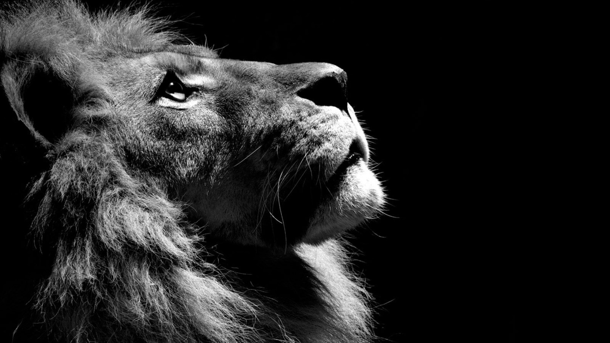

The Lion went once a-hunting along with the Fox, the Jackal, and the Wolf. They hunted and they hunted till at last they surprised a Stag, and soon took its life. Then came the question how the spoil should be divided. "Quarter me this Stag," roared the Lion; so the other animals skinned it and cut it into four parts. Then the Lion took his stand in front of the carcass and pronounced judgment: The first quarter is for me in my capacity as King of Beasts; the second is mine as arbiter; another share comes to me for my part in the chase; and as for the fourth quarter, well, as for that, I should like to see which of you will dare to lay a paw upon it."
"Humph," grumbled the Fox as he walked away with his tail between his legs; but he spoke in a low growl ."You may share the labours of the great, but you will not share the spoil."
A Lion had come to the end of his days and lay sick unto death at the mouth of his cave, gasping for breath. The animals, his subjects, came round him and drew nearer as he grew more and more helpless. When they saw him on the point of death they thought to themselves: "Now is the time to pay off old grudges." So the Boar came up and drove at him with his tusks; then a Bull gored him with his horns; still the Lion lay helpless before them: so the Ass, feeling quite safe from danger, came up, and turning his tail to the Lion kicked up his heels into his face. "This is a double death," growled the Lion.
Only cowards insult dying majesty.
A Lion once fell in love with a beautiful maiden and proposed marriage to her parents. The old people did not know what to say. They did not like to give their daughter to the Lion, yet they did not wish to enrage the King of Beasts. At last the father said: "We feel highly honoured by your Majesty's proposal, but you see our daughter is a tender young thing, and we fear that in the vehemence of your affection you might possibly do her some injury. Might I venture to suggest that your Majesty should have your claws removed, and your teeth extracted, then we would gladly consider your proposal again." The Lion was so much in love that he had his claws trimmed and his big teeth taken out. But when he came again to the parents of the young girl they simply laughed in his face, and bade him do his worst.
Love can tame the wildest.